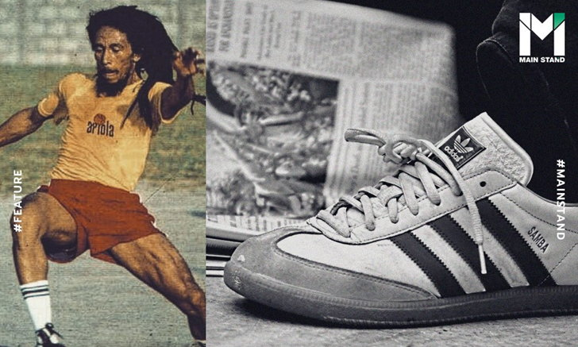
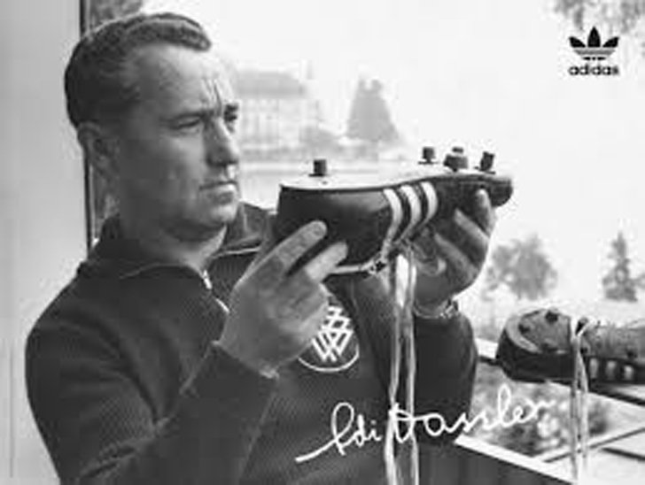
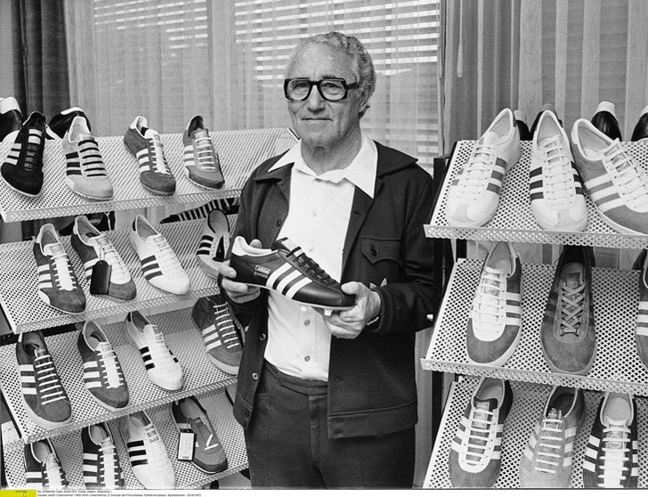
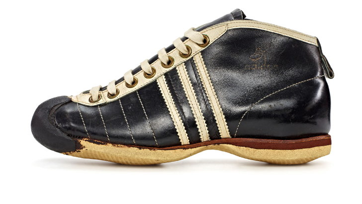
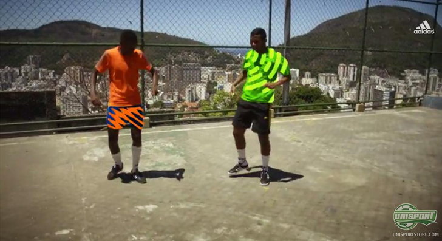
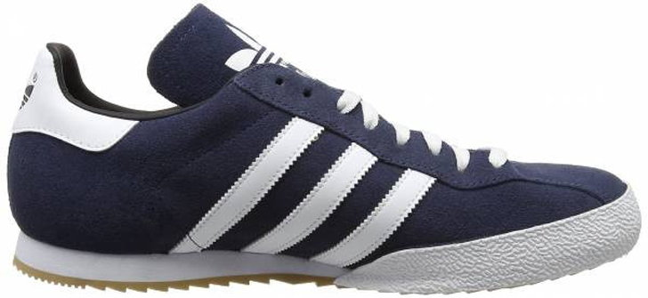
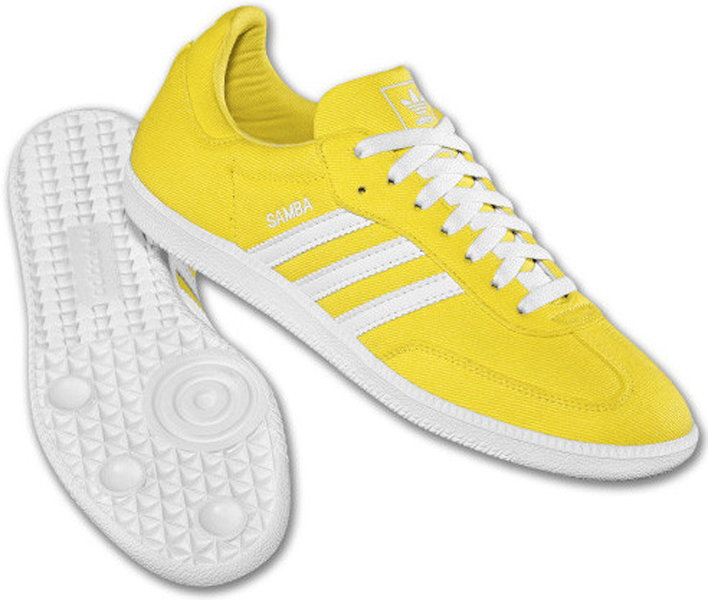
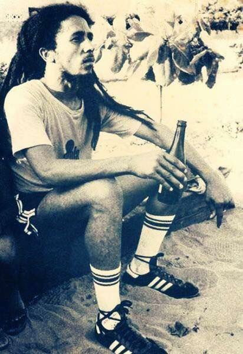
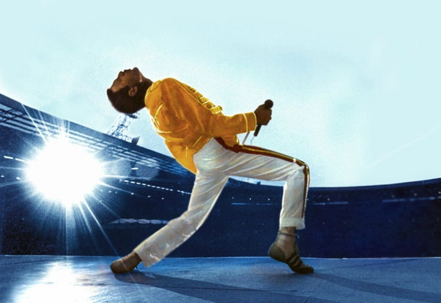
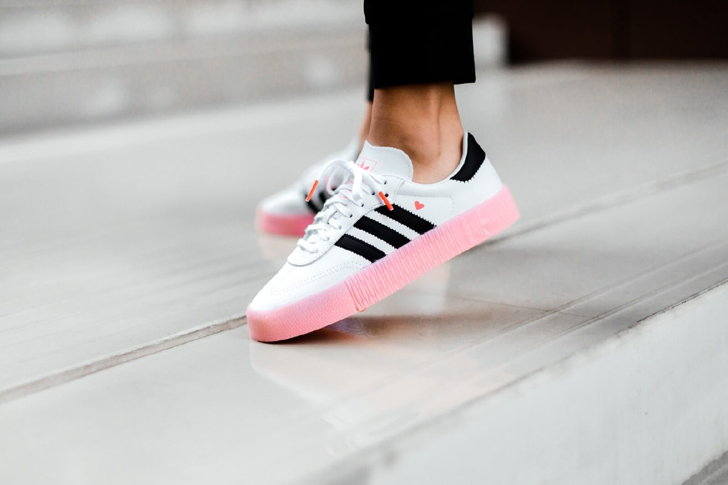

อย่าว่าเพื่อนผม! "โพดอลสกี" ยัน "โอซิล" ไม่ใช่นักฟุตบอลที่ห่วยแตก
"เมซุต โอซิล เป็นนักฟุตบอลที่เก่งมากพอจะช่วยสนับสนุนให้โค้ชคนหนึ่งประสบความสำเร็จในอาชีพการงานได้เลยนะ แต่ด้วยสถานการณ์บางอย่างทำให้เขาไม่มีโอกาสลงเล่นในทีมอาร์เซนอล" โพลดี้ กล่าวกับ The Athletic
"ไม่รู้เหมือนกันว่าเขาดีลกับผู้จัดการทีมหรือฝ่ายบริหารสโมสรไว้ยังไงบ้าง เพราะถึงแม้เราจะสนิทกันแต่ผมไม่คิดถามเรื่องพวกนี้จากโอซิลเลย เพราะมันคือเรื่องส่วนตัวระหว่างนักเตะกับเอเยนต์"
"อย่างไรก็ตาม เขาเป็นนักเตะระดับโลก มีคาแรคเตอร์ยอดเยี่ยม ประสบความสำเร็จมาแล้วมากมาย ฉะนั้นจึงไม่ใช่ไอ้ห่วยแตกอย่างที่ใครหลายคนก่นด่ากันอยู่ในช่วง 1-2 ปีหลัง"
"แถมทางโอซิลไม่เคยแก้ตัว ไม่เคยพูดให้ร้ายสโมสรออกสื่อเลยแม้แต่ครั้งเดียว นี่คือเรื่องที่ผมเสียดายแทนทุกฝ่ายจากใจจริง" ดาวยิงวัย 35 ปีที่ตอนนี้อยู่กับ อันทัลยาสปอร์ ในลีกตุรกี ร่ายยาว
"adidas Samba" : รองเท้าคู่ใจสายสตรีทฟุตบอลที่ผ่านประวัติศาสตร์ยาวนานกว่า 70 ปี

"รองเท้ารุ่นไหนคือรุ่นที่ขายดีที่สุดตลอดกาลของ adidas?"
คำถามนี้สำหรับคนที่คลุกคลีอยู่ในแวดวงสนีกเกอร์ หรือเป็นแฟนคลับของแบรนด์อุปกรณ์กีฬาตรา 3 แถบจากเยอรมันแบรนด์นี้น่าจะตอบได้ไม่ยาก เนื่องจากรุ่น Stan Smith ดูจะเป็นรุ่นที่โดดเด่น ประสบความสำเร็จอย่างสูง อีกทั้งยังคลาสสิคผ่านกาลเวลามาอย่างยาวนาน จนกลายเป็นคำตอบของคำถามดังกล่าว แต่ถ้าถามต่อว่า
"แล้วอันดับ 2 ล่ะ?"เชื่อได้เลยว่าน่าจะมีน้อยคนที่ตอบได้ และสำหรับคนที่ไม่ทราบก็เป็นเรื่องยากเหลือเกินในการเดาให้ถูกต้อง เนื่องจากรุ่น Samba ซึ่งเป็นคำตอบนั้น ถึงแม้จะเป็นรุ่นคลาสสิค แต่ก็ไม่ได้อยู่ในกระแสความนิยมเท่าไรนัก อย่างไรก็ตามด้วยยอดขายรวมกว่า 35 ล้านคู่ทั่วโลก ก็ไม่ใช่เรื่องแปลกที่ adidas Samba จะได้ตำแหน่งรองแชมป์ไปครอง
นอกจากเรื่องของยอดขายแล้ว ความพิเศษของ adidas Samba ยังมีอีกมากมาย ไม่ว่าจะเป็นประวัติศาสตร์อันยาวนาน จุดกำเนิดที่น่าสนใจ หรือแม้แต่การไปปรากฎเป็นไอเท็มชิ้นโปรดของเหล่าคนดัง ติดตามเรื่องราวเหล่านี้ได้ที่ Main Stand
รองเท้าพิชิตน้ำแข็งadidas ก่อตั้งเป็นแบรนด์ขึ้นอย่างเป็นทางการในปี 1924 หรือกว่า 95 ปีที่แล้ว ดังนั้นการที่ Samba ถูกสร้างสรรค์ออกมาในช่วงต้นยุค 50's หรือ 70 ปีที่แล้ว เราจะเรียกมันว่าเป็นรองเท้ารุ่นบุกเบิกของแบรนด์ 3 แถบนี้ก็คงไม่ผิดนัก นอกจากนั้นมันยังถือเป็นรองเท้าที่เก่าแก่ที่สุดที่ยังมีการผลิตออกมาวางจำหน่ายจนถึงปัจจุบันของ adidas อีกด้วย
โดยเรื่องราวทั้งหมดเริ่มต้นในช่วงต้นยุค 50s หลังจาก รูดอล์ฟ ดาสเลอร์ (Rudolf Dassler) หนึ่งในผู้ก่อตั้ง ได้แยกตัวออกไปก่อตั้งแบรนด์ PUMA เป็นที่เรียบร้อยแล้ว อดอล์ฟ ดาสเลอร์ (Adolf Dassler) อีกหนึ่งผู้ก่อตั้งซึ่งเป็นน้องชายแท้ๆ ของ รูดอล์ฟ ได้รับรู้ถึงปัญหาสำคัญของนักฟุตบอลในยุคนั้น
เนื่องจากในยุคสมัยดังกล่าว อุปกรณ์ต่างๆ รวมถึงสนามที่ใช้ในการซ้อมฟุตบอลไม่ได้มีสภาพที่ดีหรือทันสมัยเช่นในปัจจุบัน ถึงแม้จะเป็นสโมสรฟุตบอลอาชีพที่มีขนาดใหญ่ก็ตาม และเมื่อช่วงเวลาแห่งฤดูหนาวในแต่ละปีเวียนมาถึง ปัญหาที่เกิดขึ้นก็ยิ่งชัดเจนเข้าไปใหญ่
ในขณะที่ฝึกซ้อมบนพื้นสนามหญ้าที่ปกคลุมไปด้วยน้ำแข็งและหิมะ บรรดานักฟุตบอลนั้นไม่สามารถควบคุมการขยับร่างกายได้ดีเหมือนที่คิด เนื่องจากความลื่นของพื้นสนาม หรือร้ายแรงไปกว่านั้นก็ถึงขั้นหกล้มจนได้รับบาดเจ็บไปเลยก็มี
เมื่อทราบเช่นนั้น อดอล์ฟ ดาสเลอร์ ก็ใช้ความพยายามในการคิดค้นรองเท้าเพื่อมาตอบโจทย์การใช้งานดังกล่าว และหลังจากนั้นไม่นาน ในปี 1950 นั้นเอง adidas Samba รุ่นแรกโฉมแรกก็เปิดตัวออกมาวางจำหน่ายอย่างเป็นทางการ
ความโดดเด่นของ adidas Samba นั้นอยู่ที่วัสดุที่นำมาใช้ในการผลิต นั่นคือ หนังจิงโจ้คุณภาพนำมาตัดแต่งหนังนิ่มเสริมเข้าไป บริเวณนิ้วเท้ามีความทนทานเป็นพิเศษ และมีการเสริมความแข็งแกร่งทั้งคุณภาพวัสดุและรูปแบบการถักทอ ซึ่งสิ่งเหล่านี้เรียกได้ว่า อดอล์ฟ คิดค้นมันขึ้นมาเพื่อเป็นรองเท้าที่เหมาะสำหรับการเล่นฟุตบอลโดยเฉพาะ
adidas Samba ได้รับความนิยมอย่างรวดเร็วในช่วงเวลาอันสั้น เพราะถึงแม้รองเท้ารุ่นนี้จะได้รับการออกแบบมาเพื่อการฝึกซ้อมฟุตบอลบนน้ำแข็ง แต่ด้วยคุณสมบัติที่มีความทนทานและยึดเกาะพื้นได้ดี จึงทำให้มันถูกนำมาเพื่อเล่นฟุตบอลบนพื้นปูนหรือฟุตบอลในร่มอย่างล้นหลาม นอกจากนั้นมันยังมาพร้อมกับลวดลายที่สวยคลาสสิค ไม่ฉูดฉาดโดดเด่น แต่เป็นความโก้เท่แบบสุขุมในสไตล์ที่เข้ากับสปอร์ตแวร์ได้เป็นอย่างดี
หลังจากนั้นเป็นต้นมาชื่อของ adidas Samba ก็กลายเป็นเหมือนสัญลักษณ์ของ "สตรีทฟุตบอล" ไปโดยปริยาย ในประเทศไทยก็เช่นเดียวกัน adidas Samba แทบจะกลายเป็นตัวแทนของการเล่นฟุตบอลข้างถนนในช่วงยุคสมัยหนึ่งเสียด้วยซ้ำ
และด้วยความนิยมขนาดนี้แน่นอนว่า adidas ย่อมไม่หยุดแค่รุ่น Samba OG แต่มี "รุ่นน้อง" ตามมาตอกย้ำความสำเร็จอีกมากมายหลายรุ่น
สานต่อตำนานความสำเร็จเนื่องจากเป็นรองเท้าที่มีวัสดุหลักเป็นหนังจิงโจ้ ซึ่งถือเป็นวัสดุหายาก ส่งผลให้ adidas Samba เป็นรองเท้าที่มีราคาไม่ถูกนัก และไม่ใช่ทุกคนที่จะเข้าถึงมันได้ ดังนั้นหลังจาก Samba ออกวางจำหน่ายไปได้ไม่นาน ทาง adidas ก็ได้ออก "รุ่นคู่แฝด" ของ Samba ในชื่อ Mamba โดยมีลักษณะภายนอกเหมือนกันแทบทุกอย่าง เพียงแต่รุ่น Mamba นั้นใช้วัสดุหลักเป็นหนังวัวแทนหนังจิงโจ้ และมีราคาถูกกว่า หลังจากนั้น อีกสารพัดรุ่นก็ตามมา อาทิ
Samba Super Suede : คืออีกหนึ่งในรุ่นในซีรี่ส์ที่ประสบความสำเร็จอย่างสูง ด้วยการใช้วัสดุหลักเป็นหนังกลับ ส่งผลให้รูปลักษณ์มีความแฟชั่น เข้ากับสไตล์ต่างๆ ได้ดียิ่งขึ้น
adidas Samba 85 : มีการใช้สีที่แตกต่างเมื่อเปรียบเทียบกับรุ่นอื่นๆ ของ Samba ในขณะที่ Samba OG มักจะมาในสีดำ ขาว และน้ำตาล แต่ 85 จะโดดเด่นด้วยสีน้ำเงิน ส่งผลให้ภาพลักษณ์เปลี่ยนไป ลดความน่าเบื่อให้กับซีรี่ส์นี้ได้เป็นอย่างดี
adidas Samba Super : มีรูปลักษณ์แบบ Samba ดั้งเดิม แต่มีขนาดของลิ้นที่ใหญ่ขึ้นเป็นพิเศษ ช่วยให้ดีไซน์โดยรวมมีความแตกต่างออกไป
adidas Samba JP : การออกแบบ adidas Samba JP นั้นขัดแย้งกับรูปลักษณ์ของ Samba แบบดั้งเดิมเล็กน้อย เนื่องจากมีการเพิ่มเติมวัสดุสักหลาดเข้าไป ทำให้บริเวณนิ้วเท้ามีความนุ่มนวลยิ่งขึ้น
adidas Originals Samba in Lemon-Yellow : ในปี 2011 ถือเป็นที่ฮือฮาอย่างมาก เนื่องจากที่ผ่านมาหลายสิบปี Samba นั้นมีสีจำกัดอยู่แค่ในโทนเข้ม ดังนั้นเมื่อมีสี "เหลืองมะนาว" ออกมาวางจำหน่าย จึงใช้เวลาไม่นานในการหมดจากชั้นวางขาย
นอกจากรุ่นที่กล่าวมาแล้ว adidas Samba ยังมีรุ่นย่อยลงไปอีกมากมาย แต่รุ่นเหล่านั้นมีลักษณะแทบไม่ต่างจากจากรุ่นดั้งเดิมเลย ต่างเพียงรายละเอียดเล็กน้อย รวมถึงปีที่ผลิตเท่านั้น จึงขอไม่นำมากล่าวขยายความเพิ่มเติมให้มากความ ได้แก่รุ่น Samba 62, Samba NUA, Samba MTL, และ Samba 523
ส่วนสำคัญของวัฒนธรรมป๊อปคัลเจอร์ด้วยยอดขายกว่า 35 ล้านคู่ ส่วนหนึ่งนั้นแน่นอนว่ามาจากกลุ่มลูกค้าที่ชื่นชอบในศักยภาพ และต้องการนำ adidas Samba ไปเป็นรองเท้าสำหรับเตะฟุตบอลคู่ใหม่ แต่ก็ปฏิเสธไม่ได้ว่าอีกส่วนสำคัญที่ทำให้รองเท้ารุ่นนี้ได้รับความนิยมและประสบความสำเร็จขนาดนี้ ก็เพราะการที่มันเข้าไปอยู่ในวัฒนธรรมป๊อปคัลเจอร์ (Pop Culture) นั่นเอง
adidas Samba ถือว่าเป็นไอเท็มประจำกายของ "บ็อบ มาร์เล่ย์" (Bob Marley) ราชาเพลงเร็กเก้ โดยมีแทบนับครั้งไม่ถ้วนที่เขาสวมใส่รองเท้ารุ่นนี้และปรากฏรูปถ่ายออกมา สาเหตุก็น่าจะเพราะ บ็อบ มาร์เล่ย์ หลงรักกีฬาฟุตบอลอย่างมาก เขามักจะเตะฟุตบอลเป็นประจำ ดังนั้นนี่อาจจะเป็นรองเท้าที่เข้ากับไลฟ์สไตล์ของเขามากที่สุด
นอกจากนั้นเหตุการณ์ในความทรงจำและประวัติศาสตร์ครั้งสำคัญของวงการดนตรีโลก นั่นคือคอนเสิร์ต Live Aid ในปี 1985 โดย เฟรดดี้ เมอร์คิวรี่ (Freddie Mercury) ฟรอนแมนต์วง Queen ได้สวมใส่ adidas Samba ขึ้นทำการแสดง และนั่นคือหนึ่งในการแสดงที่ได้รับการยกย่องว่ายอดเยี่ยมที่สุดตั้งแต่โลกนี้มีดนตรีมา อย่างไรก็ตามข้อมูลในส่วนนี้ไม่มีการยืนยันแน่ชัด เนื่องจากคุณภาพของภาพในสมัยนั้นค่อนข้างต่ำ ทำให้สื่อบางสำนักก็บอกว่ามันคือรุ่น Hercules ที่มีลวดลายใกล้เคียงกันอย่างมาก
ในปี 1996 หนึ่งในภาพยนตร์ Coming of Age ที่ได้รับการยกย่องว่ายอดเยี่ยมที่สุด ตีแผ่ชีวิตมุมหนึ่งของวัยรุ่นได้ดีที่สุดอย่างเรื่อง Trainspotting ได้เข้าฉาย และพระเอกของเรื่องอย่างตัวละคร มาร์ก เรนตัน ที่รับบทโดย ยวน แม็คเกรเกอร์ (Ewan McGregor) สวมใส่รองเท้ารุ่น adidas Samba Super Suede
หรือแม้จะเป็นหลังจากยุค 2000s ความนิยมของ adidas Samba ก็ยังคงไม่เสื่อมคลาย โดยในปี 2009 ไชอา ลาเบิฟ (Shia LaBeouf) ในบทบาทของ แซม วิดวิกกี้ ได้สวมใส่ Samba สีดำปรากฏในภาพยนตร์เรื่องดังอย่าง Transformers: Revenge of the Fallen
ปี 2010 ในภาพยนตร์โรแมนติกคอมเมดี้เรื่อง Valentine's Day และ That '70s Show นักแสดงหนุ่มแอชตัน คูเช่อ (Ashton Kutcher) ก็สวมใส่ Samba เช่นเดียวกัน
ปี 2012 โจเซฟ กอร์ดอน-เลวิท (Joseph Gordon-Levitt) พระเอกอาภัพรักคนดังจากภาพยนตร์เรื่อง 500 Days of Summer ก็ได้สวมใส่ Samba OG ในภาพยนตร์เรื่อง Premium Rush ที่เจ้าตัวรับบทเป็นแมสเซนเจอร์สิงห์นักปั่นฟิกซ์เกียร์
ปี 2015 เทย์เลอร์ เลาท์เนอร์ (Taylor Lautner) นักแสดงหนุ่มชื่อดังจากบทมนุษย์หมาป่าเจค็อบ จากซีรี่ส์ภาพยนตร์ Twilight ก็สวมใส่ Samba OG สีดำในภาพยนตร์เรื่อง Tracers
ดังนั้นถ้าจะถามว่าอะไรคือเหตุผลในความสำเร็จที่ทำให้ adidas Samba ประสบความสำเร็จอย่างล้นหลาม โด่งดัง และเดินทางข้ามเวลากว่า 70 ปี จากยุค 50's ถึงปัจจุบัน คำตอบก็คงเป็นเพราะนี่คือรองเท้าที่เป็นส่วนผสมอันลงตัวของประโยชน์การใช้สอยที่ยอดเยี่ยม รูปลักษณ์ภายนอกที่เท่โฉบเฉี่ยว เข้าได้กับทุกสไตล์ และอิทธิพลจากวัฒนธรรมป๊อปคัลเจอร์นั่นแหละ
สำหรับใครที่อ่านบทความนี้แล้วรู้สึกตกหลุมรักเสน่ห์ของซีรี่ส์ Samba ของ adidas อย่างที่กล่าวไปว่านี่คือซีรี่ส์ที่เหนือกาลเวลา ดังนั้นในปัจจุบันนี้ก็สามารถจับจองเป็นเจ้าของได้ง่ายๆ เพียงเข้าไปในเว็บไซต์ของ adidas จากนั้นก็เสิร์ชคำว่า Samba เพียงเท่านี้ก็สามารถเลือกช็อปได้ตามสบาย
ไม่ว่าจะเป็นรุ่น OG ที่สนนราคาอยู่ที่คู่ละ 3,800 บาท เช่นเดียวกับรุ่น Sambarose ส่วนรุ่น Samba RM ลดราคาจากคู่ละ 4,700 บาท เหลือ 2,350 บาท หรือแม้กระทั่งรองเท้าสำหรับเล่นกอล์ฟของซีรี่ส์ Samba ก็มีวางจำหน่ายเช่นกัน ลดราคาเหลือคู่ละ 3,640 บาท จากราคาเดิม 5,200 บาท
ถ้าใครไม่เคยสัมผัสเสน่ห์อันอมตะของรองเท้าซีรี่ส์นี้ ก็น่าจะเป็นโอกาสดีที่จะได้ลองมันสักครั้ง